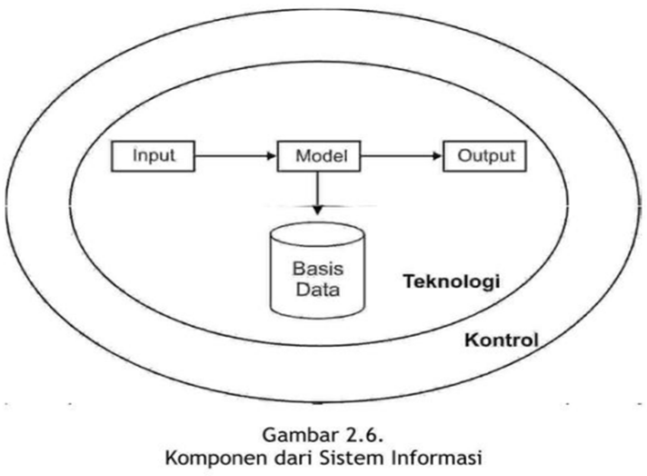
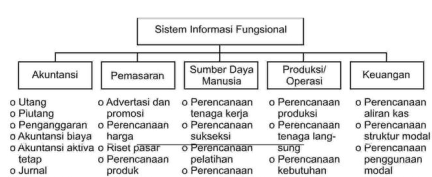
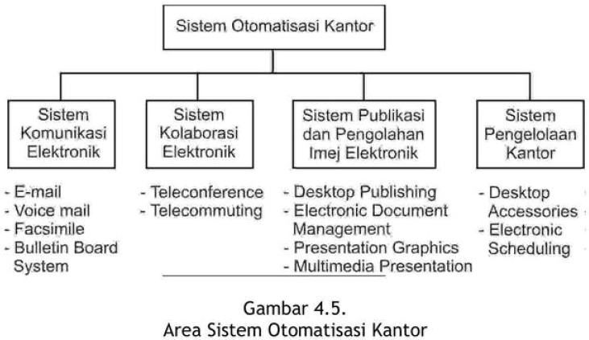

Modul ini membhasa aplikasi sistem-sistem informasi di organisasi. Setelah mempelajari dengan baik modul ini, Anda diharapkan mampu:
Sistem informasi dapat diterapkan di dalam fungsi-fungsi organisasi atau di tingkatan-tingkatan organisasi.
Jika struktur perusahaan didasarkan pada fungsi-fungsi organisasinya maka unit- unit di perusahaan dikelompokkan ke dalam beberapa fungsi atau departemen, seperti akuntansi, keuangan, pemasaran, produksi, sumber daya manusia.
Sistem informasi terdiri dari enam komponen, yaitu input, model, output, teknologi, basis data, dan kontrol (lihat Modul 2).

Jika keenam komponen sistem informasi ini diterapkan ke dalam fungsi-fungsi organisasi akan menj adi sistem-sistem informasi fungsional atau yang disebut dengan nama lain sistem informasi manajemen (management information systems).
idem…sistem informasi akuntansi (accounting information system).
idem…sistem informasi keuangan (financial information system).
sistem informasi pemasaran (marketing information system).
sistem informasi produksi (production information system atau manufacturing information system)
sistem informasi sumber daya manusia (human resource information system)

Digunakan untuk pengendalian dan pengambilan keputusan manajemen yang sifatnya setengah terstruktur (semi structured),
Sistem pakar (SP) atau expert Systems (ES), jaringan neural buatan (JNB) atau artificial neural network (ANN), sistem penunjang keputusan (SPK) atau decision support systems (DSS) atau group support systems (GSS), sistem informasi geografis (SIG) atau geographic information systems (GIS).
Sistem informasi berbasis telekomunikasi yang mengumpulkan, memproses, menyimpan dan mendistribusikan pesan-pesan, dokumen-dokumen dan komunikasi elektronik lainnya di antara individual, grup-grup kerja dan organisasi- organisasi.
Menghubungkan ke tiga level manajemen
